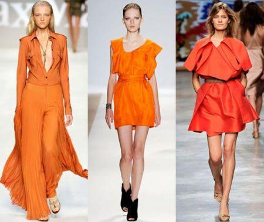

MODA
 |
| Il termine moda deriva dal latino modus, che significa maniera, norma, regola, tempo, melodia, ritmo, tono, moderazione, guisa, discrezione.
Nei secoli passati, l'abbigliamento alla moda era appannaggio delle sole classi abbienti soprattutto per via del costo dei tessuti e dei coloranti usati, che venivano estratti dal mondo minerale, animale e vegetale. Prima dell'Ottocento, l'abito era considerato talmente prezioso che veniva elencato tra i beni testamentari. I ceti poco abbienti erano soliti indossare solo abiti tagliati rozzamente e, soprattutto, colorati con tinture poco costose come il grigio. A questi aggiungeva scarpe in panno o legno. Non potendo permettersi il lusso di acquistare abiti nuovi confezionati su misura, tali classi ripiegavano spesso sull'abbigliamento usato.
Il termine moda compare per la prima volta, nel suo significato attuale, nel trattato La carrozza da nolo, ovvero del vestire alla moda, dell'abate Agostino Lampugnani, pubblicato nel 1645.
|
|
| |
| |
|  |